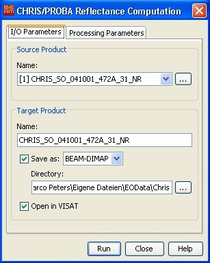

| CHRIS/Proba TOA Reflectance Computation | |
CHRIS products are provided in top of the atmosphere (TOA)
radiance (radiometrically calibrated data).
The TOA apparent reflectance is estimated according to:
where L(x, y, λi) is the provided at-sensor upward radiance at the image location (x, y), I(λi) is the extraterrestrial instantaneous solar irradiance, and θ(x, y) is the angle between the illumination direction and the vector perpendicular to the surface. In the proposed algorithm, θ(x, y) is approximated by the Solar Zenith Angle provided in the CHRIS attributes since one can assume flat landscape and constant illumination angle for the area observed in a CHRIS image. Finally, the Sun irradiance, I(λ), is taken from Thuillier et al. (2003), corrected for the acquisition day, and convolved with the CHRIS spectral channels.
Thuillier, G., Hersé, M., Labs, D., Foujols, T., Peetermans, W., Gillotay, D., Simon, P. C., and Mandel, H. (2003). The solar spectral irradiance from 200 to 2400 nm as measured by the SOLSPEC spectrometer from the ATLAS and EURECA missions. Solar Physics, 214:1�22.

Sun irradiance corrected for the day of the year and the CHRIS
channels (left)
and TOA apparent reflectance estimated from the sensor radiance
(right).
The extraterrestrial solar irradiance I(λ) given in Thuillier et al. (2003) is provided from 200 to 2400 nm in mW/m2/nm. It shall be corrected for the Julian day of year (DOY), J, according to the following approximate formulae:

where the day of year can be easily obtained from the Image
Date metadata of the CHRIS file.
Since the reference extraterrestrial solar irradiance presents a
different spectral sampling, it is resampled to the CHRIS
spectral channels. A specific CHRIS band, i, consists of the
addition of one or more CCD detector pixel elements depending on
the band width. Therefore, the spectral response of a CHRIS band,
Si(λ), is the sum of the the spectral response
S(λ) of the corresponding detectors of the CCD array.
Then, the mean solar irradiance for a given band,
I(λi), is obtained by integrating the
extraterrestrial solar irradiance by its spectral response:

The theoretical half-width of the instrument line-spread functions correspond to spectral resolutions of 1.25 nm at 415 nm, increasing to 11.25 nm at 1050 nm. One could assume a Gaussian response function, S(λ), for each element using its full-width half-maximum (FWHM), and sum up all the elements of the band. However, in the header of the CHRIS files, although the CCD row number for lower and upper wavelengths of each band is provided, the FWHM of each CCD element is not. Therefore, for the shake of simplicity, the spectral response of a CHRIS band, Si(λ), is defined as a bell-shaped function depending on the mid-wavelength, λi, and the band width, Δλi, of the band, directly:

where both the mid-wavelength and the band width values for each channel are included in the CHRIS file.
The TOA Reflectance Computation tool can be invoked from VISAT Tools menu by selecting the TOA Reflectance Computation... command in the CHRIS/Proba Tools submenu.

Name: Here the user specifies the name of the source product. The combo box presents a list of all products open in VISAT. The user may select one of these or, by clicking on the button next to the combo box, choose a product from the file system.
Name: Used to specify the name of the target product.
Save as: Used to specify whether the target product should be saved to the file system. The combo box presents a list of file formats, currently BEAM-DIMAP, GeoTIFF, and HDF5. The text field allows to specify a target directory.
Open in VISAT: Used to specify whether the target product should be opened in VISAT. When the the target product is not saved, it is opened in VISAT automatically.

Copy radiance bands: Here the user selects whether the radiance bands shall be copied to the output product or not.
Run Creates the target product. The processing is actually deferred until the target band data are accessed, either by writing the product to the file system or by viewing the band data. When the Save as option is checked, the processing is triggered automatically.
Close Closes the dialog.
Help Displays this page in VISAT Help.